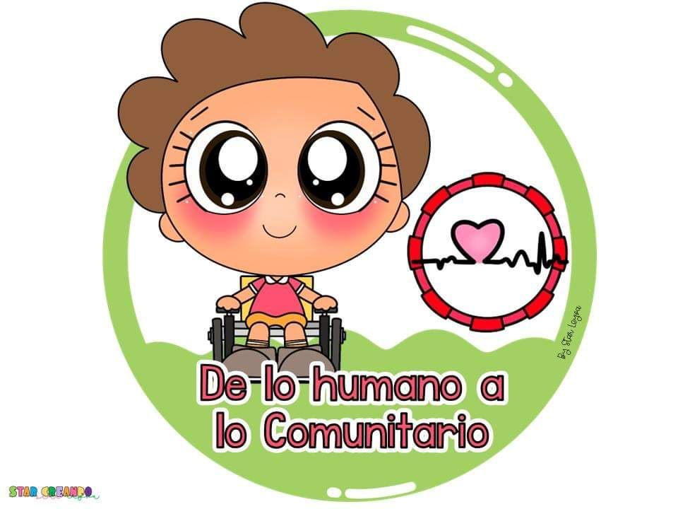
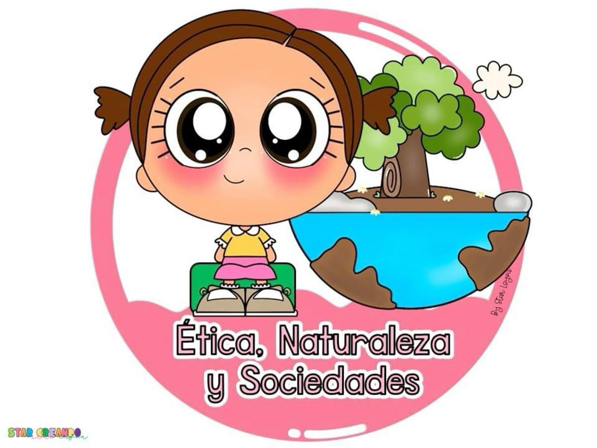
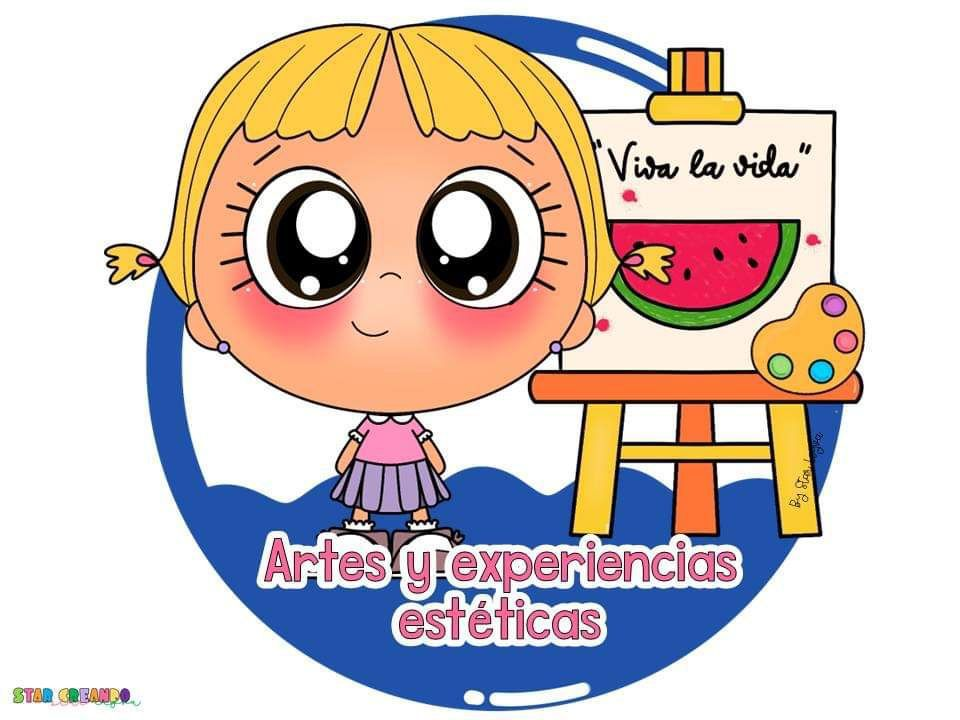
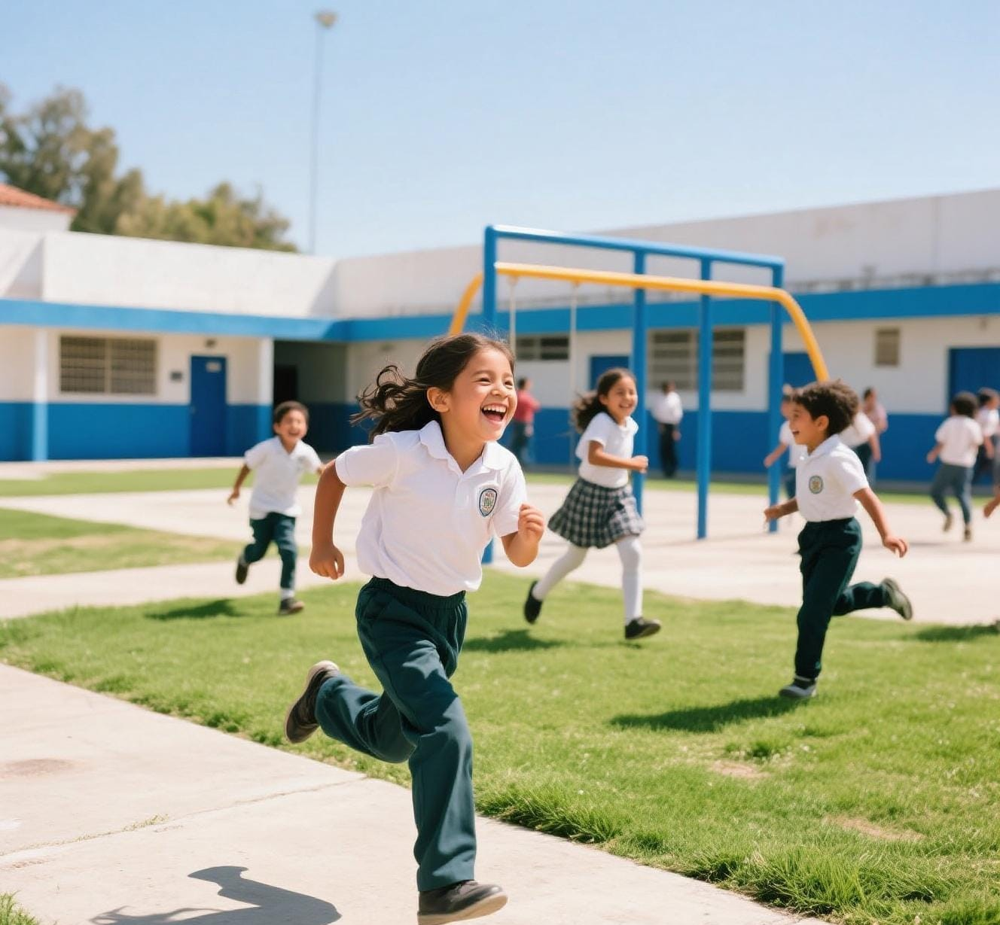

Bienvenidos
Bienvenido a la Primaria Maria Montessori: Forjando Líderes del Mañana con la Sabiduría de hoy. En nuestra institución celebramos la etapa fundamental de la educación primaria como una oportunidad única para consolidar los cimientos del conocimiento y cultivar las habilidades esenciales que permitirán a nuestros estudiantes prosperar en un mundo en constante evolución.
Nuestros Ejes Formativos
Saberes y Pensamiento Científico
Promueve la comprensión y la relación del mundo natural y social desde la perspectiva de la ciencia y las matemáticas.
Saberes y Pensamiento Científico
Promueve la comprensión y la relación del mundo natural y social desde la perspectiva de la ciencia y las matemáticas.
Lenguajes
Desarrollar las capacidades comunicativas en múltiples formas de expresión.
Lenguajes
Desarrollar las capacidades comunicativas en múltiples formas de expresión.

De lo Humano y lo Comunitario
Se centra en el individuo como ser único y en su interacción con la comunidad.
De lo Humano y lo Comunitario
Se centra en el individuo como ser único y en su interacción con la comunidad.

Ética, Naturaleza y Sociedades
Explora la relación del ser humano con la naturaleza y la sociedad.
Ética, Naturaleza y Sociedades
Explora la relación del ser humano con la naturaleza y la sociedad.
Educación Física
Promueve el desarrollo integral del cuerpo mediante el movimiento, el juego y la actividad física.
Educación Física
Promueve el desarrollo integral del cuerpo mediante el movimiento, el juego y la actividad física.

Artes y Experiencias Estéticas
Desarrollo de la sensibilidad, la creatividad y la apreciación estética a través de la práctica artística y la exploración cultural.
Artes y Experiencias Estéticas
Desarrollo de la sensibilidad, la creatividad y la apreciación estética a través de la práctica artística y la exploración cultural.
Nuestra Misión
El Colegio Montessori es una institución privada, comprometida con la formación y el desarrollo de habilidades, capacidades, actitudes y valores, capaz de moldear individuos con una educación integral de calidad e innovadora, preparándolos para su incorporación a la sociedad y para todos los conocimientos y aprendizajes a lo largo de su vida.
Con un cuerpo docente de primer nivel y instalaciones de vanguardia, ofrecemos un ambiente de aprendizaje dinámico y multicultural.

Actividades Extra Curriculares
Se contarán con actividades extracurriculares después del horario de clases, permitiendo desarrollar habilidades sociales, fomentar la comunicación, el trabajo en equipo y la resolución de conflictos. Además, promueven la confianza en sí mismos y ayudan a los estudiantes a descubrir nuevos intereses y pasatiempos.
Ayudantía en tareas
Apoyo académico y orientación en los deberes escolares.
Danza
Expresión artística a través del ritmo y el movimiento.
Fútbol
Fomento del trabajo en equipo, la disciplina y la condición física.
Pintura
Exploración de la creatividad mediante el arte visual.
Horario establecido:
1:15 p.m. a 3:00 p.m.
Horarios y Modalidad
No esperes más. ¡Inscríbete ahora y forma parte de nuestra comunidad!
Inscripciones Abiertas